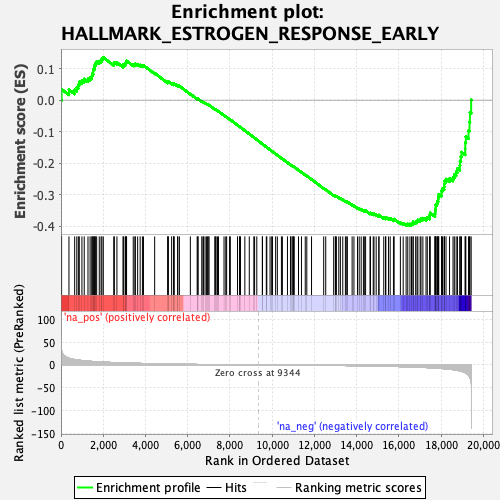
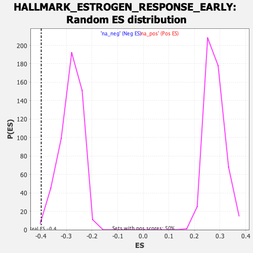

| | | Dataset | DE_genes |
| Phenotype | NoPhenotypeAvailable |
| Upregulated in class | na_neg |
| GeneSet | HALLMARK_ESTROGEN_RESPONSE_EARLY |
| Enrichment Score (ES) | -0.39852548 |
| Normalized Enrichment Score (NES) | -1.4115103 |
| Nominal p-value | 0.003960396 |
| FDR q-value | 0.055879142 |
| FWER p-Value | 0.428 |
Table: GSEA Results Summary

Fig 1: Enrichment plot: HALLMARK_ESTROGEN_RESPONSE_EARLY
Profile of the Running ES Score & Positions of GeneSet Members on the Rank Ordered List
| SYMBOL | RANK IN GENE LIST | RANK METRIC SCORE | RUNNING ES | CORE ENRICHMENT | | 1 | BAG1 | 29 | 31.226 | 0.0345 | No |
| 2 | HES1 | 377 | 14.584 | 0.0333 | No |
| 3 | B4GALT1 | 647 | 11.731 | 0.0328 | No |
| 4 | RHOBTB3 | 748 | 10.936 | 0.0402 | No |
| 5 | SLC24A3 | 822 | 10.526 | 0.0486 | No |
| 6 | GLA | 866 | 10.221 | 0.0581 | No |
| 7 | MICB | 991 | 9.542 | 0.0627 | No |
| 8 | NAV2 | 1100 | 8.955 | 0.0674 | No |
| 9 | NPY1R | 1278 | 8.195 | 0.0676 | No |
| 10 | MYC | 1378 | 7.849 | 0.0715 | No |
| 11 | AR | 1459 | 7.591 | 0.0761 | No |
| 12 | BCL11B | 1478 | 7.530 | 0.0839 | No |
| 13 | TUBB2B | 1525 | 7.367 | 0.0900 | No |
| 14 | OLFM1 | 1526 | 7.359 | 0.0985 | No |
| 15 | REEP1 | 1580 | 7.183 | 0.1040 | No |
| 16 | PPIF | 1598 | 7.118 | 0.1113 | No |
| 17 | MYBBP1A | 1639 | 7.006 | 0.1173 | No |
| 18 | RASGRP1 | 1688 | 6.867 | 0.1227 | No |
| 19 | RBBP8 | 1812 | 6.546 | 0.1239 | No |
| 20 | MED24 | 1897 | 6.324 | 0.1268 | No |
| 21 | CYP26B1 | 1937 | 6.229 | 0.1320 | No |
| 22 | IL17RB | 2003 | 6.081 | 0.1356 | No |
| 23 | FRK | 2498 | 5.079 | 0.1158 | No |
| 24 | RRP12 | 2527 | 5.021 | 0.1201 | No |
| 25 | ISG20L2 | 2648 | 4.795 | 0.1194 | No |
| 26 | FKBP4 | 2943 | 4.305 | 0.1091 | No |
| 27 | FKBP5 | 2948 | 4.295 | 0.1138 | No |
| 28 | EGR3 | 3039 | 4.156 | 0.1140 | No |
| 29 | CISH | 3051 | 4.140 | 0.1182 | No |
| 30 | SYBU | 3089 | 4.084 | 0.1209 | No |
| 31 | MYB | 3105 | 4.066 | 0.1249 | No |
| 32 | MREG | 3421 | 3.613 | 0.1127 | No |
| 33 | LAD1 | 3499 | 3.530 | 0.1127 | No |
| 34 | NXT1 | 3521 | 3.503 | 0.1157 | No |
| 35 | LRIG1 | 3630 | 3.375 | 0.1140 | No |
| 36 | SLC19A2 | 3748 | 3.233 | 0.1116 | No |
| 37 | PDZK1 | 3856 | 3.098 | 0.1096 | No |
| 38 | DEPTOR | 3905 | 3.036 | 0.1106 | No |
| 39 | BCL2 | 4435 | 2.447 | 0.0860 | No |
| 40 | TIAM1 | 5052 | 1.892 | 0.0561 | No |
| 41 | BLVRB | 5069 | 1.879 | 0.0575 | No |
| 42 | AKAP1 | 5080 | 1.872 | 0.0591 | No |
| 43 | ELOVL2 | 5239 | 1.745 | 0.0529 | No |
| 44 | ADCY1 | 5335 | 1.665 | 0.0499 | No |
| 45 | FAM102A | 5340 | 1.661 | 0.0516 | No |
| 46 | SLC7A2 | 5356 | 1.648 | 0.0527 | No |
| 47 | KRT13 | 5526 | 1.518 | 0.0457 | No |
| 48 | SH3BP5 | 5527 | 1.517 | 0.0474 | No |
| 49 | SLC27A2 | 5606 | 1.467 | 0.0451 | No |
| 50 | RETREG1 | 6125 | 1.158 | 0.0195 | No |
| 51 | WFS1 | 6448 | 0.963 | 0.0039 | No |
| 52 | OLFML3 | 6482 | 0.949 | 0.0033 | No |
| 53 | KRT18 | 6488 | 0.943 | 0.0041 | No |
| 54 | TBC1D30 | 6666 | 0.851 | -0.0041 | No |
| 55 | SVIL | 6722 | 0.820 | -0.0060 | No |
| 56 | ELOVL5 | 6753 | 0.807 | -0.0067 | No |
| 57 | PMAIP1 | 6823 | 0.773 | -0.0093 | No |
| 58 | KRT8 | 6894 | 0.739 | -0.0121 | No |
| 59 | CXCL12 | 6943 | 0.720 | -0.0138 | No |
| 60 | SFN | 6970 | 0.709 | -0.0143 | No |
| 61 | CELSR2 | 7012 | 0.690 | -0.0157 | No |
| 62 | ITPK1 | 7285 | 0.570 | -0.0291 | No |
| 63 | SLC26A2 | 7308 | 0.562 | -0.0296 | No |
| 64 | PODXL | 7344 | 0.545 | -0.0308 | No |
| 65 | PTGES | 7412 | 0.522 | -0.0337 | No |
| 66 | SLC16A1 | 7457 | 0.504 | -0.0354 | No |
| 67 | OPN3 | 7720 | 0.406 | -0.0485 | No |
| 68 | ZNF185 | 7803 | 0.377 | -0.0524 | No |
| 69 | RPS6KA2 | 7844 | 0.364 | -0.0540 | No |
| 70 | SLC22A5 | 7982 | 0.321 | -0.0608 | No |
| 71 | KLF4 | 8017 | 0.308 | -0.0622 | No |
| 72 | ABHD2 | 8359 | 0.212 | -0.0797 | No |
| 73 | TIPARP | 8457 | 0.189 | -0.0845 | No |
| 74 | FLNB | 8464 | 0.188 | -0.0846 | No |
| 75 | KCNK5 | 8501 | 0.176 | -0.0862 | No |
| 76 | CBFA2T3 | 8706 | 0.131 | -0.0967 | No |
| 77 | TSKU | 8916 | 0.083 | -0.1075 | No |
| 78 | P2RY2 | 9132 | 0.039 | -0.1186 | No |
| 79 | FOXC1 | 9167 | 0.033 | -0.1203 | No |
| 80 | NRIP1 | 9272 | 0.015 | -0.1257 | No |
| 81 | AQP3 | 9536 | -0.032 | -0.1393 | No |
| 82 | HR | 9538 | -0.032 | -0.1393 | No |
| 83 | XBP1 | 9722 | -0.064 | -0.1488 | No |
| 84 | CLDN7 | 9746 | -0.068 | -0.1499 | No |
| 85 | TOB1 | 9900 | -0.102 | -0.1577 | No |
| 86 | ARL3 | 9977 | -0.121 | -0.1615 | No |
| 87 | CCND1 | 10017 | -0.129 | -0.1634 | No |
| 88 | ELF3 | 10164 | -0.167 | -0.1708 | No |
| 89 | MED13L | 10245 | -0.186 | -0.1747 | No |
| 90 | SLC37A1 | 10438 | -0.236 | -0.1844 | No |
| 91 | UNC119 | 10483 | -0.246 | -0.1864 | No |
| 92 | MLPH | 10724 | -0.307 | -0.1985 | No |
| 93 | NCOR2 | 10866 | -0.345 | -0.2055 | No |
| 94 | FCMR | 10894 | -0.352 | -0.2065 | No |
| 95 | SLC7A5 | 10978 | -0.379 | -0.2103 | No |
| 96 | FASN | 10989 | -0.382 | -0.2104 | No |
| 97 | GAB2 | 11009 | -0.388 | -0.2110 | No |
| 98 | RHOD | 11045 | -0.401 | -0.2123 | No |
| 99 | UGCG | 11247 | -0.455 | -0.2222 | No |
| 100 | FDFT1 | 11387 | -0.506 | -0.2289 | No |
| 101 | MSMB | 11566 | -0.557 | -0.2375 | No |
| 102 | DHRS2 | 11640 | -0.582 | -0.2406 | No |
| 103 | SLC1A4 | 11864 | -0.655 | -0.2514 | No |
| 104 | INHBB | 12440 | -0.870 | -0.2803 | No |
| 105 | SIAH2 | 12536 | -0.909 | -0.2842 | No |
| 106 | TMEM164 | 12913 | -1.067 | -0.3025 | No |
| 107 | NBL1 | 12992 | -1.095 | -0.3053 | No |
| 108 | ABLIM1 | 13002 | -1.102 | -0.3045 | No |
| 109 | TPD52L1 | 13041 | -1.117 | -0.3052 | No |
| 110 | ELF1 | 13154 | -1.168 | -0.3096 | No |
| 111 | CHPT1 | 13229 | -1.202 | -0.3121 | No |
| 112 | DYNLT3 | 13343 | -1.267 | -0.3165 | No |
| 113 | RAB17 | 13467 | -1.336 | -0.3214 | No |
| 114 | MUC1 | 13508 | -1.364 | -0.3219 | No |
| 115 | IGFBP4 | 13561 | -1.392 | -0.3230 | No |
| 116 | AREG | 13786 | -1.522 | -0.3328 | No |
| 117 | CCN5 | 13872 | -1.583 | -0.3354 | No |
| 118 | SNX24 | 14040 | -1.697 | -0.3421 | No |
| 119 | GREB1 | 14121 | -1.755 | -0.3443 | No |
| 120 | FOS | 14214 | -1.830 | -0.3469 | No |
| 121 | TPBG | 14320 | -1.897 | -0.3502 | No |
| 122 | TFAP2C | 14363 | -1.934 | -0.3502 | No |
| 123 | SLC9A3R1 | 14424 | -1.980 | -0.3510 | No |
| 124 | OVOL2 | 14633 | -2.141 | -0.3593 | No |
| 125 | CANT1 | 14656 | -2.160 | -0.3580 | No |
| 126 | JAK2 | 14785 | -2.262 | -0.3620 | No |
| 127 | ADD3 | 14821 | -2.292 | -0.3612 | No |
| 128 | IL6ST | 14925 | -2.386 | -0.3638 | No |
| 129 | TTC39A | 15051 | -2.485 | -0.3674 | No |
| 130 | RAB31 | 15058 | -2.493 | -0.3649 | No |
| 131 | SLC1A1 | 15284 | -2.716 | -0.3734 | No |
| 132 | PAPSS2 | 15370 | -2.808 | -0.3746 | No |
| 133 | DHCR7 | 15381 | -2.820 | -0.3719 | No |
| 134 | SLC39A6 | 15510 | -2.957 | -0.3751 | No |
| 135 | KLK10 | 15589 | -3.037 | -0.3757 | No |
| 136 | TJP3 | 15743 | -3.220 | -0.3799 | No |
| 137 | FARP1 | 15776 | -3.253 | -0.3778 | No |
| 138 | SCARB1 | 16071 | -3.638 | -0.3889 | No |
| 139 | NADSYN1 | 16204 | -3.823 | -0.3914 | No |
| 140 | SYNGR1 | 16343 | -3.996 | -0.3939 | Yes |
| 141 | SULT2B1 | 16421 | -4.107 | -0.3932 | Yes |
| 142 | TGIF2 | 16524 | -4.302 | -0.3935 | Yes |
| 143 | RARA | 16598 | -4.395 | -0.3923 | Yes |
| 144 | KLF10 | 16671 | -4.511 | -0.3908 | Yes |
| 145 | PDLIM3 | 16677 | -4.514 | -0.3858 | Yes |
| 146 | CD44 | 16795 | -4.706 | -0.3865 | Yes |
| 147 | SEC14L2 | 16860 | -4.794 | -0.3843 | Yes |
| 148 | ADCY9 | 16899 | -4.876 | -0.3807 | Yes |
| 149 | ABAT | 17008 | -5.097 | -0.3804 | Yes |
| 150 | WWC1 | 17047 | -5.183 | -0.3764 | Yes |
| 151 | PRSS23 | 17137 | -5.338 | -0.3749 | Yes |
| 152 | RAPGEFL1 | 17286 | -5.700 | -0.3760 | Yes |
| 153 | THSD4 | 17345 | -5.827 | -0.3723 | Yes |
| 154 | KCNK15 | 17458 | -6.080 | -0.3711 | Yes |
| 155 | BHLHE40 | 17465 | -6.090 | -0.3644 | Yes |
| 156 | KRT19 | 17480 | -6.120 | -0.3580 | Yes |
| 157 | ENDOD1 | 17707 | -6.693 | -0.3621 | Yes |
| 158 | KDM4B | 17718 | -6.718 | -0.3548 | Yes |
| 159 | MINDY1 | 17724 | -6.751 | -0.3473 | Yes |
| 160 | ESRP2 | 17743 | -6.789 | -0.3404 | Yes |
| 161 | TFF1 | 17745 | -6.799 | -0.3327 | Yes |
| 162 | INPP5F | 17800 | -6.967 | -0.3274 | Yes |
| 163 | ANXA9 | 17830 | -7.065 | -0.3208 | Yes |
| 164 | PLAAT3 | 17866 | -7.167 | -0.3143 | Yes |
| 165 | SEMA3B | 17870 | -7.187 | -0.3062 | Yes |
| 166 | AFF1 | 17889 | -7.233 | -0.2988 | Yes |
| 167 | SLC2A1 | 18018 | -7.733 | -0.2966 | Yes |
| 168 | TFF3 | 18019 | -7.739 | -0.2876 | Yes |
| 169 | CLIC3 | 18066 | -7.937 | -0.2809 | Yes |
| 170 | MYOF | 18144 | -8.241 | -0.2754 | Yes |
| 171 | CELSR1 | 18153 | -8.270 | -0.2663 | Yes |
| 172 | ALDH3B1 | 18159 | -8.293 | -0.2570 | Yes |
| 173 | MAST4 | 18233 | -8.614 | -0.2508 | Yes |
| 174 | MAPT | 18399 | -9.426 | -0.2485 | Yes |
| 175 | IGF1R | 18564 | -10.248 | -0.2452 | Yes |
| 176 | DHRS3 | 18625 | -10.662 | -0.2361 | Yes |
| 177 | FHL2 | 18712 | -11.303 | -0.2275 | Yes |
| 178 | AMFR | 18774 | -11.808 | -0.2171 | Yes |
| 179 | KAZN | 18887 | -12.999 | -0.2079 | Yes |
| 180 | KRT15 | 18897 | -13.058 | -0.1933 | Yes |
| 181 | TMPRSS3 | 18935 | -13.583 | -0.1796 | Yes |
| 182 | SCNN1A | 18965 | -13.961 | -0.1650 | Yes |
| 183 | CA12 | 19141 | -16.900 | -0.1546 | Yes |
| 184 | ABCA3 | 19144 | -17.081 | -0.1350 | Yes |
| 185 | PEX11A | 19171 | -17.723 | -0.1159 | Yes |
| 186 | SYT12 | 19298 | -22.464 | -0.0966 | Yes |
| 187 | CALB2 | 19345 | -25.498 | -0.0696 | Yes |
| 188 | ASB13 | 19365 | -27.613 | -0.0387 | Yes |
| 189 | TGM2 | 19423 | -36.858 | 0.0008 | Yes |
Table: GSEA details [plain text format]

Fig 2: HALLMARK_ESTROGEN_RESPONSE_EARLY: Random ES distribution
Gene set null distribution of ES for HALLMARK_ESTROGEN_RESPONSE_EARLY